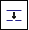

Split Path command
Use the Split Path command

to split a path segment at a defined location into two separate path segments.For more information see, Splitting path segments.
Use the Split Path command

to split a path segment at a defined location into two separate path segments.For more information see, Splitting path segments.